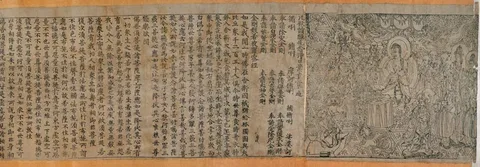
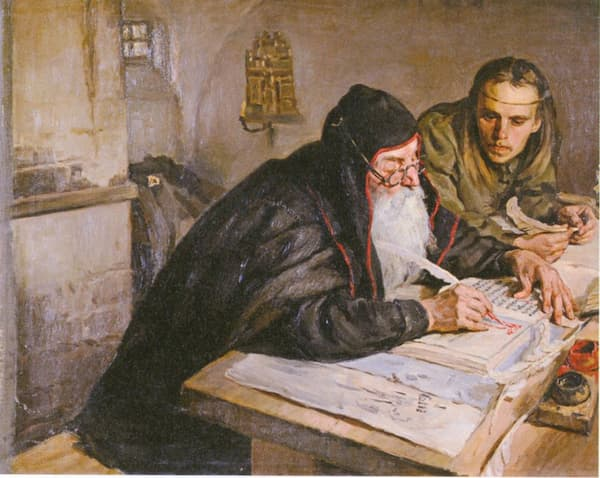
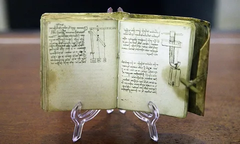
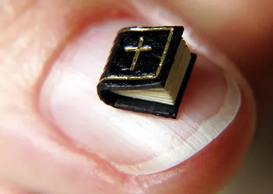
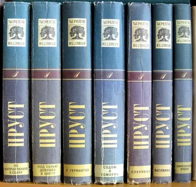
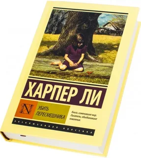
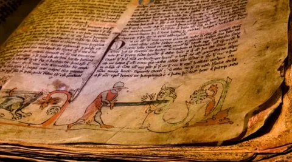
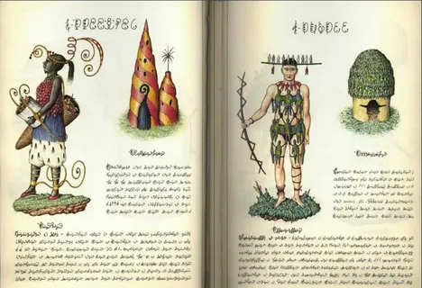
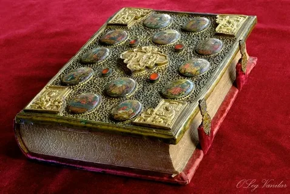
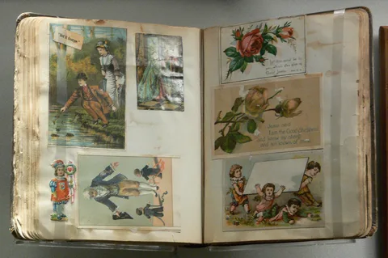

Удивительные факты о книгах, о которых вы не знали
Книги — это не просто источник знаний, но и удивительные артефакты, хранящие тайны прошлого и
вдохновляющие на новые открытия. Давайте познакомимся с 20 любопытными фактами из мира литературы.
Древние рукописи и первые книги
Старейшая печатная книга — «Алмазная сутра», созданная в Китае в 868 году
методом ксилографии. Это буддийский текст, дошедший до наших дней.

Материалы для письма в древности различались: в Египте использовали папирус,
а в Китае — бамбуковые дощечки, скреплённые верёвками.
Средневековые переписчики тратили годы на создание одной книги. Монахи,
занимавшиеся перепиской, иногда оставляли в полях рукописей свои жалобы на усталость и холод.

Рекорды и уникальные экземпляры
Крупнейшая библиотека мира — Библиотека Конгресса США, хранящая более 170
миллионов единиц хранения.
Самая дорогая книга — «Лестерский кодекс» Леонардо да Винчи, приобретённый
Биллом Гейтсом за 30,8 миллиона долларов.

Миниатюрная книга «Теотокос» размером всего 0,9 мм требует для чтения
микроскоп.

Длиннейшее произведение — роман Марселя Пруста «В поисках утраченного
времени», содержащий более 1,2 миллиона слов.

Интересные особенности книжного мира
Цензура и запреты коснулись многих классических произведений, включая «1984»
Оруэлла, «Лолиту» Набокова и «Убить пересмешника» Харпер Ли.

Тайные страницы встречались в средневековых манускриптах — дополнительные
записи и иллюстрации, видимые только при определённом освещении.

Нечитаемые книги, такие как «Кодекс Серафини», содержат загадочные
иллюстрации и текст на неизвестном языке.

Современные и исторические традиции
Цундоку — японская традиция покупки книг с намерением прочитать их позже,
знакомая многим книголюбам.
Первые переплёты изготавливались из кожи и дерева, часто украшались
драгоценными камнями.

Книги-пазлы XIX века позволяли создавать разные сюжетные линии путём
перестановки страниц.

Польза чтения
Регулярное чтение помогает:
Сохранять когнитивные способности
Улучшать память
Снижать уровень стресса
Повышать качество жизни
Даже 30 минут ежедневного чтения способны значительно повлиять на общее самочувствие и развитие
личности.
Интересные мифы и факты
Гутенберговские издания были настолько ценными, что их стоимость равнялась цене дома.
Следы времени в древних рукописях включают отпечатки пальцев, крошки и даже следы лап животных, свидетельствующие об активном использовании книг.
Миф о чтении как причине болезней был опровергнут — книги, наоборот, помогали людям справляться с тревогами и душевными переживаниями.
Книги продолжают оставаться не только источником знаний, но и настоящими произведениями искусства, хранящими в себе тайны веков и вдохновляющими новые поколения читателей.